Caso 019 · EMBT (Miralles; Tagliabue) · 2005 · mercado (rehabilitación)
Conservar la manzana como un recinto de piedra y cubrirla con un único plano ligero de luz difusa, separado del muro por una ranura que, orientada al SurOeste, deja pasar en invierno un haz de sol sólido que recorre la sala y cierra el de verano.
Sintetiza el lugar (latitud 41,386° N, sol de 72° en junio y 25° en diciembre, tejido denso sin horizonte, muro de 1848 que hay que conservar), el programa (un mercado de producto fresco que pide sombra y frío, con supermercado, restaurante, aparcamiento y carga bajo rasante, y viviendas para mayores), la composición (una sala hipóstila de 84 × 60 m, ordenada por una retícula de 14 × 15 m, con el entresuelo apartado del haz) y la construcción (masa de piedra y hormigón anclada al suelo, y un plano de acero y vidrio sostenido en puntos).
Estereotómico (masa que se ancla): los cuatro lienzos de piedra de 1848 (0,60 m de espesor, hasta +8,40 m, conservados y perforados por seis portales de 5,0 m), los muros pantalla y las losas de los dos sótanos, las seis cajas de escalera y ascensor de la manzana y las dos de la barra de viviendas (de hormigón, suben hasta el plano), y los muros medianeros de las viviendas cada 7 m. Tectónico (estructura que se posa): quince pilares de acero de Ø 0,70 m en la sala (de hormigón de Ø 1,00 m en los sótanos), veinte apoyos metálicos sobre el muro que atraviesan la ranura, la cercha de 1,40 m con vidrio serigrafiado, el entresuelo de acero y hormigón y los pilares metálicos de 0,16 m de las logias y galerías de las viviendas.
Retícula: x = 0, 14, 28, 42, 56, 70, 84 m; y = 0, 15, 30, 45, 60 m. En el sótano, 15 m = 5,0 (plazas) + 5,0 (calle) + 5,0 (plazas), con el pilar en el encuentro de las filas. El plano horizontal (cara inferior +9,70, superior +11,10) no lleva nada encima; el agua de lluvia se evacúa por el interior de los pilares y la pendiente de 1,5 % se resuelve en el canto de la cercha.
Núcleos verticales: C1 (esquina Oeste, de −6,00 a la sala), C2 (esquina Sur, de −6,00 al entresuelo), C3 (esquina Este, de −6,00 a la sala), C4 (de −6,00 al entresuelo, con salida a Colomines), C5 (de la sala al entresuelo) y C6 (del entresuelo a Colomines); en las viviendas, dos núcleos extremos de la planta baja a la tercera. Cada caja tiene escalera de ida y vuelta (17 peldaños de 17,6 × 28 cm), vestíbulo, ascensor con su hueco de cuatro paredes y dos patinillos de instalaciones.
Alturas solares al mediodía a 41,386° N: 72,1° el 21 de junio, 48,6° en el equinoccio y 25,2° el 21 de diciembre. El muro SurOeste mira a 225°, de modo que el ángulo del rayo en el corte perpendicular al muro es de 77° en verano, 58° en equinoccio y 33,6° en invierno.
Sistema proporcional: 14 m = 4 puestos de 3,5 m = 2 viviendas de 7 m; 15 m = 3 × 5,0 (plaza, calle, plaza); alturas en múltiplos de 3,0 m; sala de 9,70 m (0,69 × 14), ranura de 1,30 m y cercha de 1,40 m (9,70 + 1,40 = 11,10 m). Está acotado en las plantas (ejes y luces) y en S01 (ranura, vuelo, sala y alturas).
Piedra de sillería en los lienzos (el material del lugar y de la memoria de 1848), hormigón visto en sótanos y núcleos (masa, frío y robustez bajo rasante), acero y vidrio serigrafiado en el plano (ligereza y luz difusa), enlucido y bloque en las viviendas (los materiales de las manzanas vecinas). La razón se lee en S01, donde cada parte lleva rotulado su material (piedra, hormigón, acero y vidrio) y se ve su peso relativo en la sección: la masa abajo y en el recinto, el plano ligero arriba.
Sótano −2 (−6,00): 140 plazas de turismo. Sótano −1 (−3,00): 51 plazas de turismo, 15 comerciales, almacén general (1.565 m²), muelle de carga de furgones, almacén de reparto y cuarto de residuos. Planta baja: sala de mercado, cámaras frigoríficas (ocho recintos con pasillo de servicio), almacén de puestos, envases y limpieza, oficina, sala del personal, vestuarios y aseos del personal, cuatro aseos accesibles públicos; en la barra, el salón comunitario, la sala de oficios, la lavandería, la conserjería, el cuarto de basuras y el aseo accesible (3,6 × 3,5 m) y un almacén comunitario; la sala de oficios, la lavandería y la conserjería tienen puerta directa al soportal sur. Entresuelo (+3,00): supermercado (1.038 m²), restaurante (comedor de 272 m² y cocina de 56 m²) y ocho viviendas sobre la planta comunitaria. Plantas +6,00 y +9,00: ocho viviendas por planta. Soportal es la galería cubierta y abierta, sobre pilares, que bordea la planta baja de las viviendas por los dos lados.
Aparcamiento y carga. Los coches entran por la rampa de 6,5 m de ancho y 15 % que baja por la acera de Cambó hasta un patio de giro abierto de 13 × 11 m a −3,00; allí giran con un radio de eje de 5,5 m (8,5 m exterior) hacia la boca de 6,5 m del sótano −1 y siguen por una rampa interior, de la misma anchura y pendiente, hasta el sótano −2. Los furgones de reparto (hasta 2,30 m de alto) entran al muelle de carga del sótano −1, abierto a la calle de maniobra para poder girar (cuatro plazas, 2,50 m libres); el camión de recogida de residuos se detiene en el patio abierto, sin techo, frente a la puerta del cuarto de residuos. La mercancía se repone antes de abrir y sube por los ascensores de C1, C2 y C3.
| Exigido | Propuesto | Cumple o desviación |
|---|---|---|
| Documentos: situación, plantas, secciones, alzados, detalles y espacio público | U01, P01-P06, S01-S02, S03-S04 (cuatro alzados), U02, V01-V02; detalle constructivo D01 no producido (la construcción no es el carácter del proyecto) | Cumple |
| Mercado de abastos, 3.000-5.000 m², menos puestos que los actuales | 54 puestos; sala 3.171 m² + servicios ≈ 1.400 m² ≈ 4.570 m² | Cumple |
| Supermercado, 700-1.300 m² | 1.038 m² | Cumple |
| Restaurante o cafetería, 300-700 m² | 327 m² (comedor 272 y cocina 56) | Cumple |
| Carga, descarga, almacenes y residuos, 1.200-2.200 m² | ≈ 2.030 m² en el sótano −1 (almacén general, reparto, muelle, residuos) | Cumple |
| Viviendas para mayores, 2.500-4.500 m² | 24 viviendas de 48 m² útiles; barra de 2.923 m² construidos | Cumple |
| Aparcamiento público subterráneo, 190-310 plazas + 15-20 comerciales | 191 de turismo (6 accesibles) + 15 comerciales | Cumple (en el mínimo) |
| Superficie sobre rasante, 9.000-15.000 m² | ≈ 9.700 m² | Cumple |
| Urbanística (calificación, altura, ocupación, edificabilidad) | No constan en el encargo | Sin dato: no se puede verificar; se declara |
| Incendio: ≤ 2 m²/persona en baja y sótano, ≈ 3 m² en el resto; recorrido ≤ 50 m; sector comercial ≤ 2.500 m² | Dos sectores de sala de 1.626 y 1.527 m² (cortina cortafuegos sobre x = 56 m); entresuelo y servicios, sectores propios; recorridos ≤ 50 m a las escaleras y los portales; viviendas y aparcamiento, sectores propios | Cumple; la cortina es una caja colgada del plano que cae en caso de incendio (se dibuja en P03 como traza de trazos y en S02 con su nombre) |
| Aseos públicos | Cuatro cabinas individuales accesibles en la sala, dos en el entresuelo y los del personal (aseo y aseo accesible, dos vestuarios) | Desviación declarada: la dotación por ocupación teórica (≈ 1.500 personas) pediría un bloque por sexo; la ocupación real simultánea es menor y se completa en proyecto de ejecución con un segundo bloque junto a C5 |
| Evacuación del entresuelo | Ocupación del entresuelo: supermercado 1.038 m² / 3 = 346 y comedor 272 m² / 3 = 91, en total 437 personas. Escaleras que lo sirven: C2 (1,10 m), C5, C6 y C4 (1,60 m cada una) = 5,90 m; con una de 1,60 m inutilizada quedan 4,30 m × 160 = 688 personas ≥ 437 | Cumple |
| Barandillas ≥ 1,10 m (0,90 si el desnivel es < 6 m) | 1,10 m en rampas, patio de la rampa, logias, galerías y huecos de escalera | Cumple |
| Rampas accesibles 10 % (≤ 3 m), 8 % (≤ 6 m), 6 % (> 6 m), ancho ≥ 1,20 m | Las rampas de vehículos son de 15 % y no son itinerario peatonal; el itinerario accesible es por ascensor (C1-C4 y núcleos de las viviendas) | Cumple |
| Energía, zona C2: consumo y envolvente; aporte solar a ACS en las viviendas | Plano con factor solar 0,12; viviendas con logia y sol de invierno | No se ha calculado la demanda; aporte solar a ACS pendiente de proyecto de instalaciones (desviación declarada) |
Se conservan los cuatro lienzos del mercado de 1848 (hipótesis: 8,40 m de alto y 0,60 m de espesor) con sus seis portales de 5,0 m, más dos puertas de 2,0 m para las salidas de C4 y C6. Se demuelen la cubierta y el interior del mercado y la edificación deteriorada de la parcela de Colomines. La extensión exacta de lo conservable no consta y se tomó como hipótesis.
| Elemento | Material | Acabado |
|---|---|---|
| Lienzos de 1848 | piedra | piedra vista, restaurada |
| Sótanos y núcleos | hormigón | hormigón visto |
| Pilares de la sala | metal | acero pintado gris grafito |
| Plano de luz | metal y vidrio | vidrio laminado serigrafiado y opal |
| Muros y particiones de servicios | bloque | enlucido blanco |
| Viviendas, fachadas | bloque | enlucido |
| Viviendas, medianeras | hormigón | hormigón visto |
| Pavimentos | losa, baldosa, tarima | hormigón pulido (sala y sótanos), baldosa (aseos, cocinas, servicios), tarima (viviendas y salón) |
Saneamiento y agua de lluvia, por el interior de los pilares y por los muros de los núcleos; patinillos de instalaciones de 4-5 m² en cada núcleo, con acceso desde el vestíbulo; la extracción de humos de la sala se realiza por la ranura practicable (≈ 360 m² libres).
No se produce la lámina D01. Los encuentros decisivos son: muro–plano: el plano apoya en veinte apoyos metálicos de 0,40 × 0,40 m sobre el muro, a través de la ranura de 1,30 m; el vuelo es de 0,60 m y el muro remata a +8,40 m con un vidrio de 6 cm entre apoyos; obra existente–obra nueva: el lienzo de piedra y lo nuevo se tocan sin unirse: el plano solo posa sobre la coronación y los núcleos de esquina se adosan al lienzo por su cara interior; muro–losa: el muro de piedra de 0,60 m apoya sobre el muro pantalla de 0,50 m del sótano (muro de carga sobre muro de carga); entresuelo–sala: vidrio laminado y marco de acero bajo el entresuelo, sector propio.
Verano (Csa, 24-26 °C, humedad 65-75 %): el plano cierra el sol alto (72°), la ranura ventila a las cuatro fachadas y los vientos del SE y del NO cruzan la sala; el producto fresco queda a la sombra. Invierno (9-11 °C): el sol de 25° entra por la ranura SurOeste y calienta una franja de la sala; las viviendas reciben el sol por la logia. La masa del muro y de los sótanos amortigua la oscilación diaria de 7-9 °C.
Todos los niveles públicos se alcanzan por ascensor (C1-C4 desde los aparcamientos, C5 y C6 al entresuelo). Las seis plazas accesibles están junto a C4, con zona de transferencia de 1,20 m y un itinerario hasta el ascensor. Puertas de 0,90 m en itinerario accesible; aseos accesibles con círculo de 1,50 m. Evacuación: C4 y C6 salen directamente a la calle d'en Colomines, C5 a la sala; cada sector de la sala tiene portales de 5,0 m a la calle a menos de 50 m. El aparcamiento tiene salida directa por C4 y por las otras tres escaleras, sin pasar por almacenes.
Comparte con la obra de referencia lo que impone el encargo: el perímetro de la manzana y la conservación de parte de las fachadas de 1848, la carga y los coches bajo rasante, la barra de viviendas en la parcela de Colomines y la apertura al barrio. Se aparta de las decisiones de su arquitecto: no hay cubierta ondulada ni lenguaje orgánico ni color; aquí el plano es neutro, horizontal y translúcido, y el gesto es la luz que recorre la sala; la estructura es una retícula hipóstila y no una cubierta soportada en forma libre; los lienzos se conservan como recinto de piedra y no como fachada de un mosaico. Desde la teoría: la idea es una síntesis de lugar, uso, luz y construcción y no una forma, y el plano horizontal separa lo estereotómico de lo tectónico (-).
El soleamiento se ha calculado (alturas y ángulos de perfil por hora) y no comprobado con una maqueta al sol; sustituye a ésta como aproximación. No se han calculado la demanda energética ni la estructura con programa; los predimensionados son órdenes de magnitud. Las claves numéricas de las estancias las numera la herramienta de dibujo planta a planta (se repiten entre plantas), la planta de cubierta rotula el material de cada cubierta de forma automática y la situación U01 usa la cartografía esquemática de la herramienta, no cartografía oficial. En las secciones, la herramienta de dibujo deja entre el muro pantalla y el terreno un hueco de ≈ 1 m (el talud de la excavación): en obra se rellena con tierra compactada.
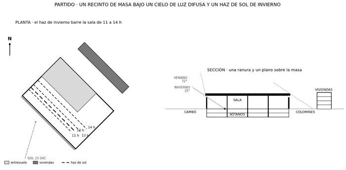
C1 · Croquis 1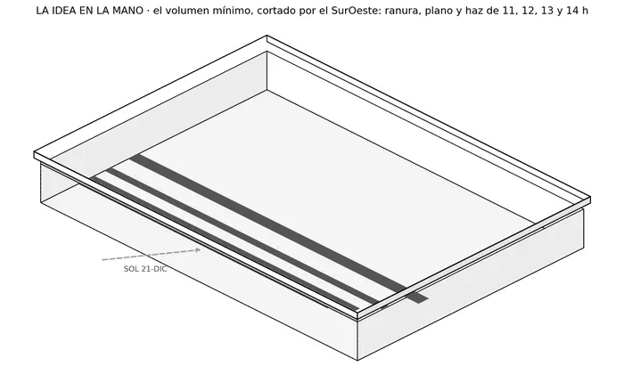
C2 · Croquis 2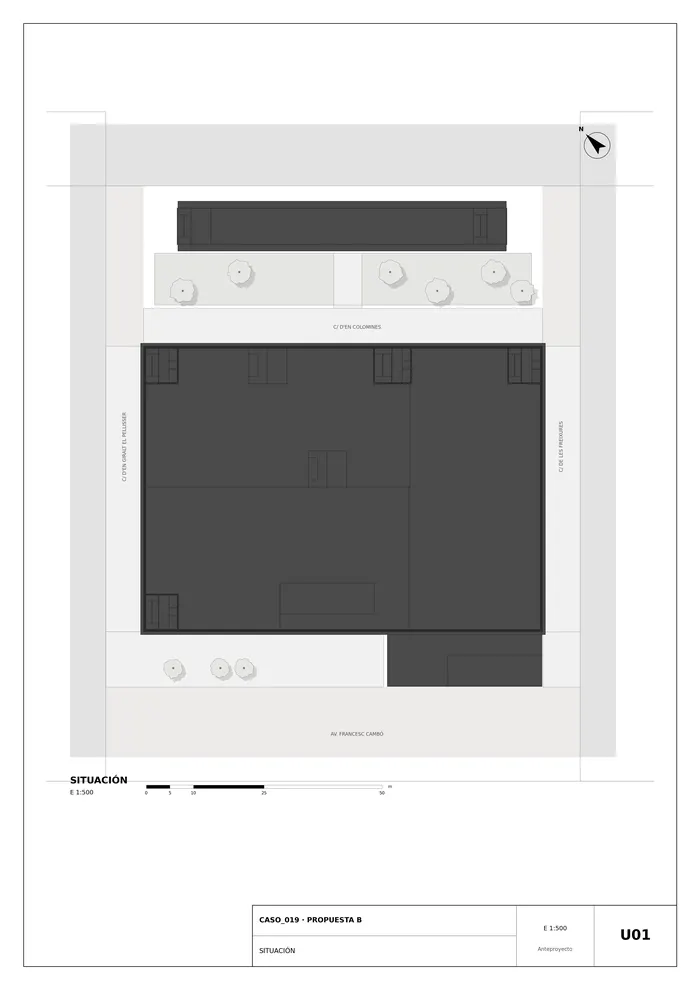
U01 · Situación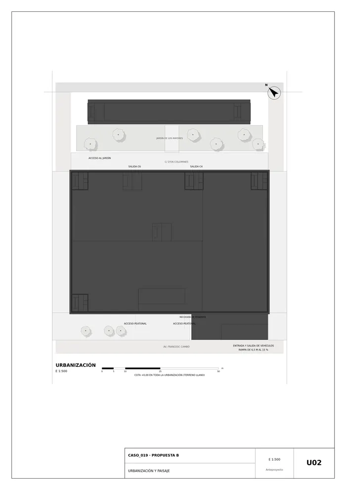
U02 · Urbanización y paisaje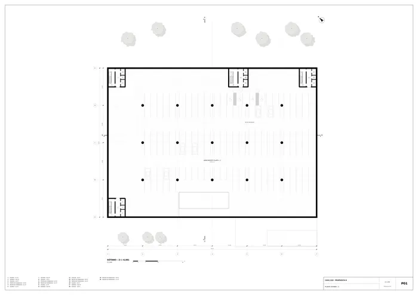
P01 · Planta sótano −2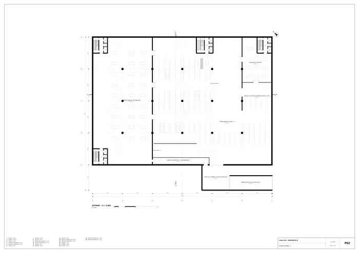
P02 · Planta sótano −1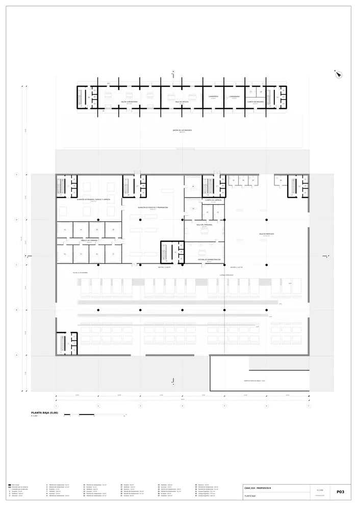
P03 · Planta baja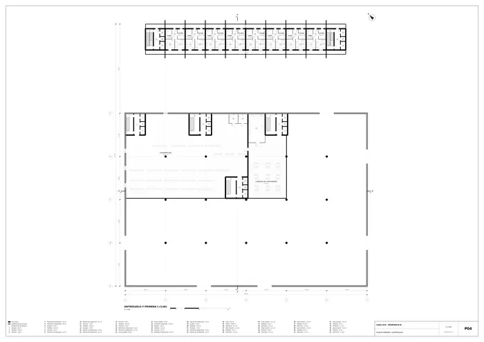
P04 · Planta primera y entresuelo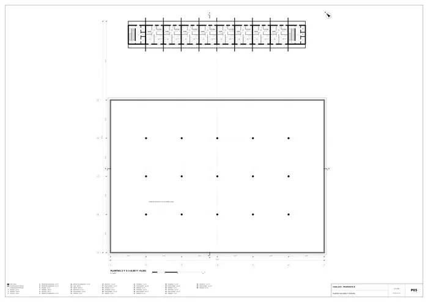
P05 · Plantas segunda y tercera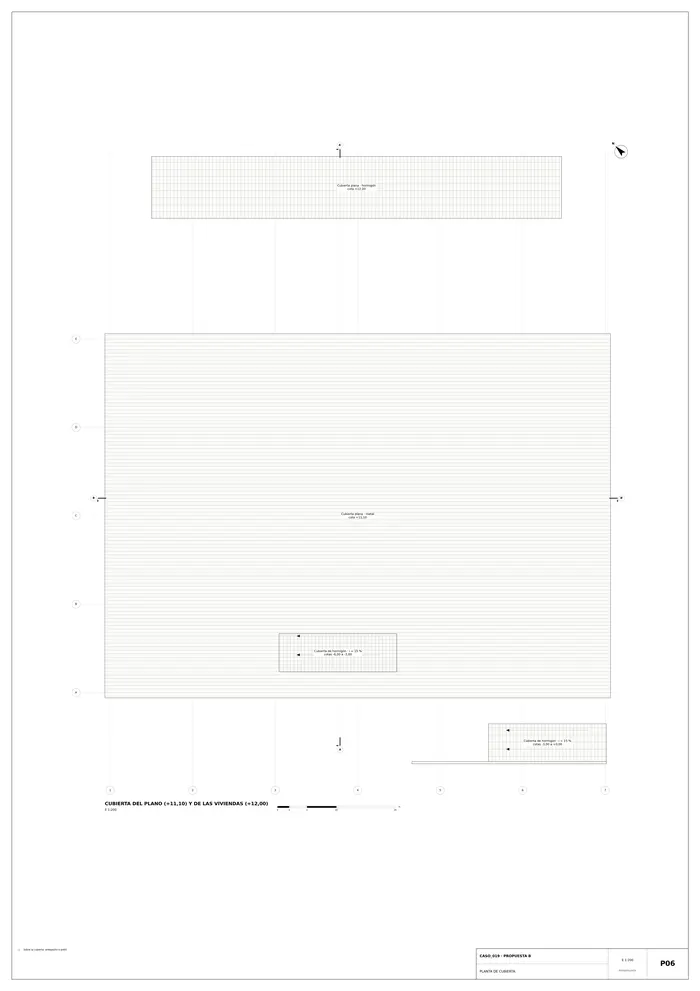
P06 · Planta de cubierta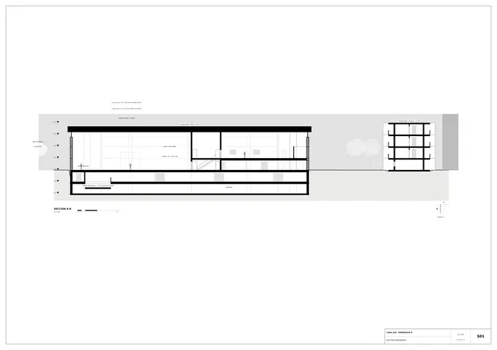
S01 · Sección generadora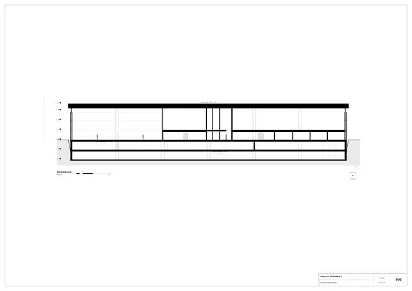
S02 · Sección transversal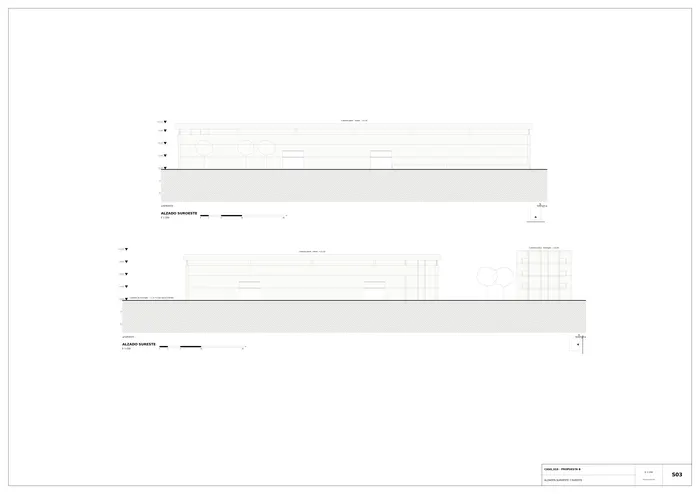
S03 · Alzados suroeste y sureste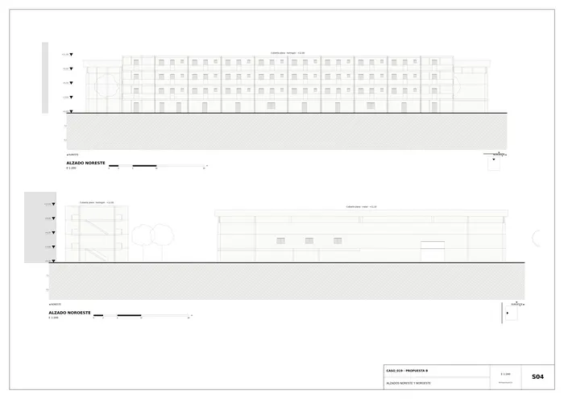
S04 · Alzados noreste y noroeste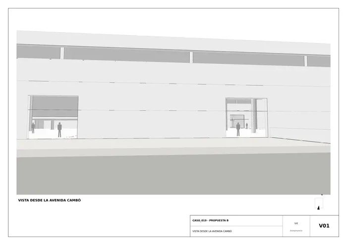
V01 · Vista desde la avenida Cambó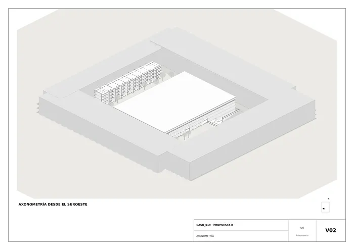
V02 · AxonometríaMemoria de la propuesta tal como la entregó el sistema. Se han omitido las notas internas del proceso (revisiones, control de reconocimiento y referencias a archivos de trabajo).